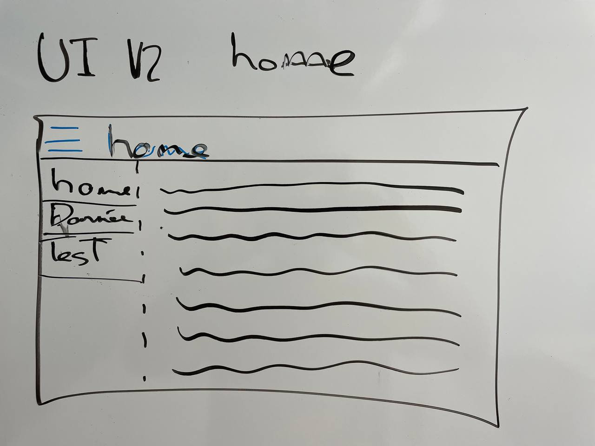
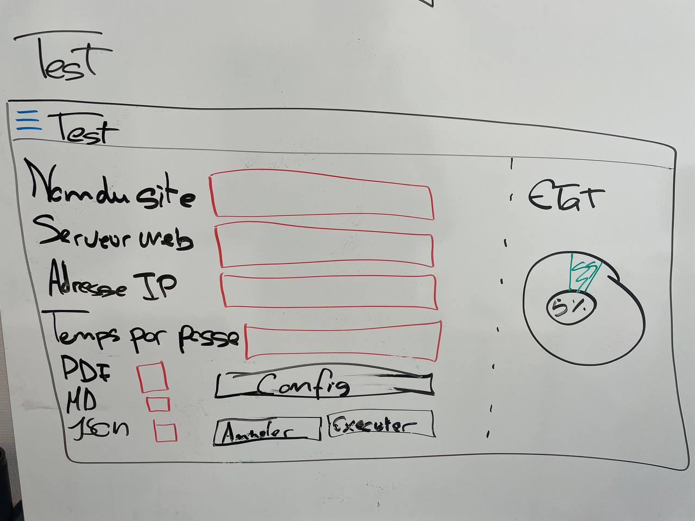
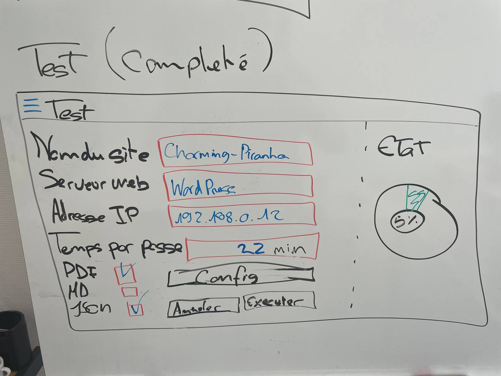

2. Projet de Banc de Mesures de Performance
3. Description
Le système sera conçu pour simuler des requêtes HTTP réalistes à l'aide de Gatling, mesurer la consommation électrique en utilisant l'INA219 connecté via le bus I2C, et collecter les mesures de performance à l'aide de Node-RED. Les rapports générés fourniront des informations détaillées sur les performances du système testé, y compris le temps de réponse, la consommation d'énergie par requête, l'utilisation du processeur, etc.
4. Caractéristiques
- Génération de trafic web: Utilisation de Gatling pour simuler des requêtes HTTP réalistes, configurer des scénarios de charge et évaluer les performances du système testé.
- Mesure de la consommation électrique (INA219): Utilisation d'un chip INA219 pour mesurer la consommation d'énergie avec précision en mesurant la tension et le courant du système testé.
- Mesure de la consommation: Utilisation de Node-RED pour relever les mesures de consommation des ressources du banc de tests, y compris la consommation d'énergie, l'utilisation du processeur, la consommation de mémoire, la bande passante et les temps de réponse.
- Génération de rapports: Utilisation de Node-RED pour générer des rapports détaillés sur les performances du système testé, y compris les mesures de performance et les données de consommation.
- Interface utilisateur: Utilisation d'une interface utilisateur conviviale pour configurer les tests, sélectionner les serveurs à tester et comparer les résultats des tests.
5. Schéma de principe
+---------+ +-------------+
| Volt | | Nidus |
|_________| |_____________|
| RPI 4 | | RPI 4 |
|_________| |_____________|
| Apache | | Node-RED |
| No-Proc | | Gatling |
| | | INA219 |
+---------+ +-------------+
^ | ^ |
| | | |
| | | |
| | | |
| v | v
+-----------------------------+
| Réseau local |
+---+-------------------+-----+
| Dashboard Node-Red|
+-------------------+
^
|
|
+------------+
|Utilisateur |
+------------+
Analyse UI
L'interface web sera réalisée avec Node-Red de fait, la navigation se fera via un menu hamburger en haut à gauche, et les pages seront affichées dans la partie centrale de la page. Il y aura 3 pages principales :
- Page d'accueil : Présente le système et explique comment l'utiliser.
- Données : Permet de voir les données collectées en temps réel.
- Tests : Permet de lancer des tests et de voir les résultats.
Il y a possibilité d'ajouter des pages supplémentaires si besoin, par exemple dans le cas de l'ajout d'une base de données pour stocker les résultats, il y aurait une page pour consulter les résultats stockés dans la base de données.
Page d'accueil

Données

Tests
 
5. Jalons
5.1. Mise en place (14.08.2023 - 21.08.2023)
5.1.1. But
Le but de ce jalon est de mettre en place l'environnement de test et de configurer les outils nécessaires pour effectuer les mesures. Tout ce qui est nécessaire pour effectuer les tests de performance doit être installé et configuré, Node-RED, Gatling et l'INA219. Les Raspberry Pi doivent être installés dans l'environnement prévu et configurés avec les paramètres de base.
5.1.2. Étapes
- Installer et configurer Node-RED sur le Raspberry Pi Nidus.
- Installer et configurer Gatling sur le Raspberry Pi Volt.
- Configurer les scénarios de test de performance dans Gatling.
- Configurer les nœuds de collecte de données dans Node-RED pour les mesures de performance et de consommation.
- Configurer l'INA219 pour mesurer la consommation d'énergie sur les Raspberry Pi.
- Installer et configurer un serveur web (Apache) sur le Raspberry Pi Volt pour les tests de performance.
- Valider la communication entre les Raspberry Pi et les outils de mesure (Node-RED, Gatling, INA219).
6. Conclusion
Le projet de Banc de Mesures de Performance vise à fournir un moyen efficace de simuler des charges réalistes sur des systèmes web, mesurer leur consommation d'énergie et collecter des données de performance. La combinaison de Gatling, Node-RED et l'INA219 offre une solution puissante pour évaluer les performances et l'efficacité énergétique des systèmes testés. L'interface utilisateur réalisée avec Node-RED permet de configurer les tests, de visualiser les données en temps réel et de générer des rapports détaillés. En réalisant ce projet, l'équipe de Confuse T-Rex a acquis une expérience précieuse dans le domaine de la performance des systèmes web et de la mesure de la consommation d'énergie.